<!DOCTYPE HTML PUBLIC "-//W3C//DTD HTML 4.01 Transitional//EN">
<html xmlns:v="urn:schemas-microsoft-com:vml"
 xmlns:o="urn:schemas-microsoft-com:office:office"
 xmlns:w="urn:schemas-microsoft-com:office:word"
 xmlns="http://www.w3.org/TR/REC-html40">
<head>
  <meta http-equiv="Content-Type" content="text/html; charset=us-ascii">
  <meta name="ProgId" content="Word.Document">
  <meta name="Generator" content="Microsoft Word 11">
  <meta name="Originator" content="Microsoft Word 11">
  <link rel="File-List" href="package_files/filelist.xml">
  <link rel="Edit-Time-Data" href="package_files/editdata.mso">
<!--[if !mso]>
<style>
v\:* {behavior:url(#default#VML);}
o\:* {behavior:url(#default#VML);}
w\:* {behavior:url(#default#VML);}
.shape {behavior:url(#default#VML);}
</style>
<![endif]-->
  <title>Security Example</title>
<!--[if gte mso 9]><xml>
 <o:DocumentProperties>
  <o:Author>xzhezha</o:Author>
  <o:LastAuthor>xzhezha</o:LastAuthor>
  <o:Revision>6</o:Revision>
  <o:TotalTime>1330</o:TotalTime>
  <o:Created>2005-09-06T20:07:00Z</o:Created>
  <o:LastSaved>2005-09-07T18:25:00Z</o:LastSaved>
  <o:Pages>1</o:Pages>
  <o:Words>467</o:Words>
  <o:Characters>2663</o:Characters>
  <o:Company>Nokia Oyj</o:Company>
  <o:Lines>22</o:Lines>
  <o:Paragraphs>6</o:Paragraphs>
  <o:CharactersWithSpaces>3124</o:CharactersWithSpaces>
  <o:Version>11.6408</o:Version>
 </o:DocumentProperties>
</xml><![endif]--><!--[if gte mso 9]><xml>
 <w:WordDocument>
  <w:SpellingState>Clean</w:SpellingState>
  <w:GrammarState>Clean</w:GrammarState>
  <w:ValidateAgainstSchemas/>
  <w:SaveIfXMLInvalid>false</w:SaveIfXMLInvalid>
  <w:IgnoreMixedContent>false</w:IgnoreMixedContent>
  <w:AlwaysShowPlaceholderText>false</w:AlwaysShowPlaceholderText>
  <w:BrowserLevel>MicrosoftInternetExplorer4</w:BrowserLevel>
 </w:WordDocument>
</xml><![endif]--><!--[if gte mso 9]><xml>
 <w:LatentStyles DefLockedState="false" LatentStyleCount="156">
 </w:LatentStyles>
</xml><![endif]-->
  <style>
<!--
 /* Font Definitions */
 @font-face
	{font-family:Times;
	panose-1:2 2 6 3 5 4 5 2 3 4;
	mso-font-charset:0;
	mso-generic-font-family:roman;
	mso-font-pitch:variable;
	mso-font-signature:536902279 -2147483648 8 0 511 0;}
@font-face
	{font-family:"Nokia Sans";
	panose-1:2 11 5 6 3 4 4 3 2 4;
	mso-font-charset:0;
	mso-generic-font-family:swiss;
	mso-font-pitch:variable;
	mso-font-signature:536871559 0 0 0 415 0;}
 /* Style Definitions */
 p.MsoNormal, li.MsoNormal, div.MsoNormal
	{mso-style-parent:"";
	margin:0in;
	margin-bottom:.0001pt;
	mso-pagination:widow-orphan;
	font-size:12.0pt;
	font-family:"Times New Roman";
	mso-fareast-font-family:"Times New Roman";}
h3
	{mso-margin-top-alt:auto;
	margin-right:0in;
	mso-margin-bottom-alt:auto;
	margin-left:0in;
	mso-pagination:widow-orphan;
	mso-outline-level:3;
	font-size:13.5pt;
	font-family:"Times New Roman";
	font-weight:bold;}
p
	{font-size:12.0pt;
	font-family:"Times New Roman";
	mso-fareast-font-family:"Times New Roman";}
p.BodyCopy, li.BodyCopy, div.BodyCopy
	{mso-style-name:"Body Copy";
	margin-top:0in;
	margin-right:0in;
	margin-bottom:14.0pt;
	margin-left:67.7pt;
	text-align:justify;
	mso-pagination:widow-orphan;
	tab-stops:center 157.5pt 553.5pt;
	font-size:10.0pt;
	font-family:"Nokia Sans";
	mso-fareast-font-family:Times;
	mso-bidi-font-family:"Times New Roman";}
span.SpellE
	{mso-style-name:"";
	mso-spl-e:yes;}
@page Section1
	{size:8.5in 11.0in;
	margin:1.0in 1.25in 1.0in 1.25in;
	mso-header-margin:.5in;
	mso-footer-margin:.5in;
	mso-paper-source:0;}
div.Section1
	{page:Section1;}
-->
  </style><!--[if gte mso 10]>
<style>
 /* Style Definitions */
 table.MsoNormalTable
	{mso-style-name:"Table Normal";
	mso-tstyle-rowband-size:0;
	mso-tstyle-colband-size:0;
	mso-style-noshow:yes;
	mso-style-parent:"";
	mso-padding-alt:0in 5.4pt 0in 5.4pt;
	mso-para-margin:0in;
	mso-para-margin-bottom:.0001pt;
	mso-pagination:widow-orphan;
	font-size:10.0pt;
	font-family:"Times New Roman";
	mso-ansi-language:#0400;
	mso-fareast-language:#0400;
	mso-bidi-language:#0400;}
</style>
<![endif]-->
</head>
<body lang="EN-US" link="blue" vlink="blue" style="">
<div class="Section1">
<p class="MsoNormal">&nbsp;This simple encryption and decryption
example
demonstrates using some of the Security and Trust Services API 1.0
defined in
JSR 177. <br>
<br style="">
<!--section contents-->
</p>
<h3>Section Contents</h3>
<blockquote style="margin-top: 5pt; margin-bottom: 5pt;">
  <p><a href="#1">1. About this example</a> </p>
  <p><a href="#2">2. Pre-requisites</a> </p>
  <p><a href="#3">3. Building and running</a> </p>
  <p><a href="#4">4. Design and implementation</a> </p>
  <p><a href="#5">5. Summary</a> </p>
</blockquote>
<div class="MsoNormal" align="center" style="text-align: center;">
<hr size="2" width="100%" align="center"></div>
<h3><a name="1">1. About this example</a> </h3>
<blockquote style="margin-top: 5pt; margin-bottom: 5pt;">
  <p>This example implements SATSA-PKI and SATSA-CRYPTO APIs.<span
 style="">&nbsp; </span>It allows the user to store messages
that are encrypted with 128 bit AES (Advanced Encryption Standard) key.<span
 style="">&nbsp; </span>The AES Encryption is symmetric, i.e.
there is only one key, which is used for both encryption and decryption.<span
 style="">&nbsp; </span></p>
</blockquote>
<h3><a name="2">2. Pre-requisites</a> </h3>
<blockquote style="margin-top: 5pt; margin-bottom: 5pt;">
  <p>The example makes use of the standard MIDP application framework
and SATSA
API. The reader should be familiar with these areas before attempting
to
understand this example.<span style="">&nbsp; </span>Some
knowledge of the basics of cryptography, network security and x.509
certificates is also recommended.</p>
</blockquote>
<h3><a name="3">3. Building and running</a> </h3>
<blockquote style="margin-top: 5pt; margin-bottom: 5pt;">
  <p>The example is built using the standard method for building and
running as
described in <a
 href="../../../../../../../../../doc-files/building.html">Building
and running the examples.</a></p>
  <p>The following classes should be included in the jar:</p>
  <blockquote style="margin-top: 5pt; margin-bottom: 5pt;">
    <p class="MsoNormal">com.nokia.midp.examples.security.satsa.*</p>
  </blockquote>
  <p>When the user starts the <span class="SpellE">MIDlet</span>, a
menu appears on
the screen, allowing the user to start to create a new message.</p>
  <p><br>
  </p>
  <p style="margin-left: 140pt; text-indent: 0.5in;"><!--[if gte vml 1]> <![endif]-->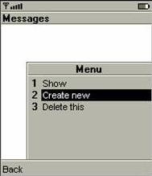</p>
  <p><br>
After the user clicks the &#8220;Create New&#8221; menu item, the following screen
allows the user to enter the message and password for encryption
purpose.</p>
  <p style="margin-left: 140pt; text-indent: 0.5in;"><!--[if gte vml 1]><![endif]-->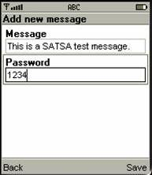</p>
  <p>After the user saves the message, the following screen appears to
display
the list of the messages created by the user.</p>
  <p style="margin-left: 140pt; text-indent: 0.5in;"><!--[if gte vml 1]><![endif]-->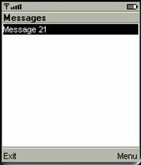</p>
  <p>If the user clicks on the Menu button, the user can choose to show
the list
of messages stored in the device.</p>
  <p style="margin-left: 140pt; text-indent: 0.5in;"><!--[if gte vml 1]><![endif]-->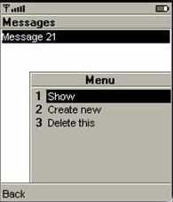</p>
  <p>The detail information of the message in hex presentation will
appear on the
following screen after the user click on &#8220;Show&#8221; menu item.</p>
  <p style="margin-left: 140pt; text-indent: 0.5in;"><!--[if gte vml 1]><![endif]-->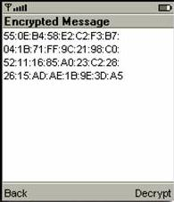</p>
  <p>The user press &#8220;Decrypt&#8221;, the application asks for the AES
password
in the following screen.</p>
  <p></p>
  <p style="margin-left: 140pt; text-indent: 0.5in;"><!--[if gte vml 1]><![endif]-->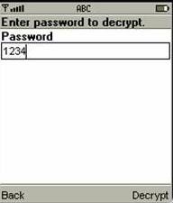</p>
  <p>The user press &#8220;Decrypt&#8221;, the message will be displayed on the
following screen.</p>
  <p style="margin-left: 140pt; text-indent: 0.5in;"><!--[if gte vml 1]><![endif]-->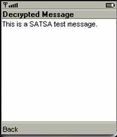</p>
  <p>If the password is incorrect, the following screen will appear.</p>
  <p></p>
  <p style="margin-left: 140pt; text-indent: 0.5in;"><!--[if gte vml 1]><![endif]-->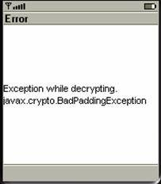</p>
  <p><o:p>&nbsp;</o:p></p>
  <p><o:p>&nbsp;</o:p></p>
  <p style="margin-bottom: 12pt;"><o:p>&nbsp;</o:p></p>
</blockquote>
<h3><a name="4">4. Design and implementation</a> <span style="">&nbsp;&nbsp;&nbsp;&nbsp;&nbsp;&nbsp;&nbsp;</span><span
 style="">&nbsp;</span><span style="">&nbsp;</span><span style="">&nbsp;&nbsp;&nbsp;</span></h3>
<p style="margin-left: 0.5in;">The MIDlet&#8217;s user interface has five
views
for operation. One is used for scrolling through and selecting
previously saved
messages, one is for entering a new message to be stored in the record
store of
the device, and three are used for displaying the message in both
encrypted and
decrypted form.<span style="">&nbsp; </span>In addition,
InfoScreen is used for displaying error messages.<span style="">&nbsp; </span>A
UI screen for the Security MIDlet is
shown below:</p>
<p class="BodyCopy"><o:p>&nbsp;</o:p></p>
<p class="BodyCopy" align="center"
 style="margin-left: 45pt; text-align: center; page-break-after: avoid;"><!--[if gte vml 1]>
 <![endif]-->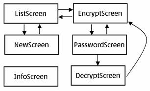</p>
<p style="text-indent: 0.5in;">Simplified cryptographic model used in
this example
is shown below:</p>
<p style="margin-left: 45pt; text-indent: 0.5in;"><!--[if gte vml 1]><![endif]-->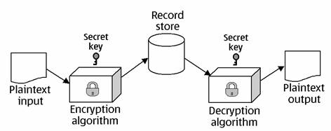</p>
<p class="MsoNormal"><b style=""><o:p>&nbsp;</o:p></b></p>
<blockquote style="margin-top: 5pt; margin-bottom: 5pt;">
  <p>A UML class diagram for the Security MIDlet is shown below:</p>
  <p>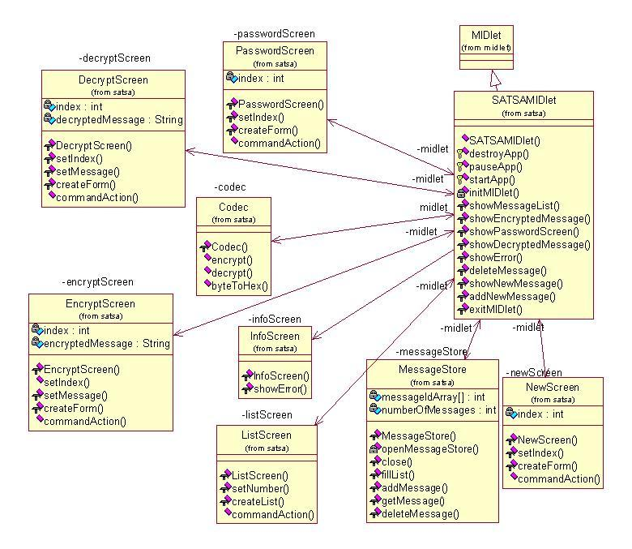</p>
</blockquote>
<h3><a name="5">5. Summary</a> </h3>
<blockquote style="margin-top: 5pt; margin-bottom: 5pt;">
  <p>This example illustrates the implementation of a simple security
prototype that
uses the MIDP SATSA1.0.</p>
</blockquote>
<p class="MsoNormal" style="margin-bottom: 12pt;"><br>
<br>
<br>
<br>
<br>
<br>
<br>
<br>
<br style="">
</p>
</div>
</body>
</html>
